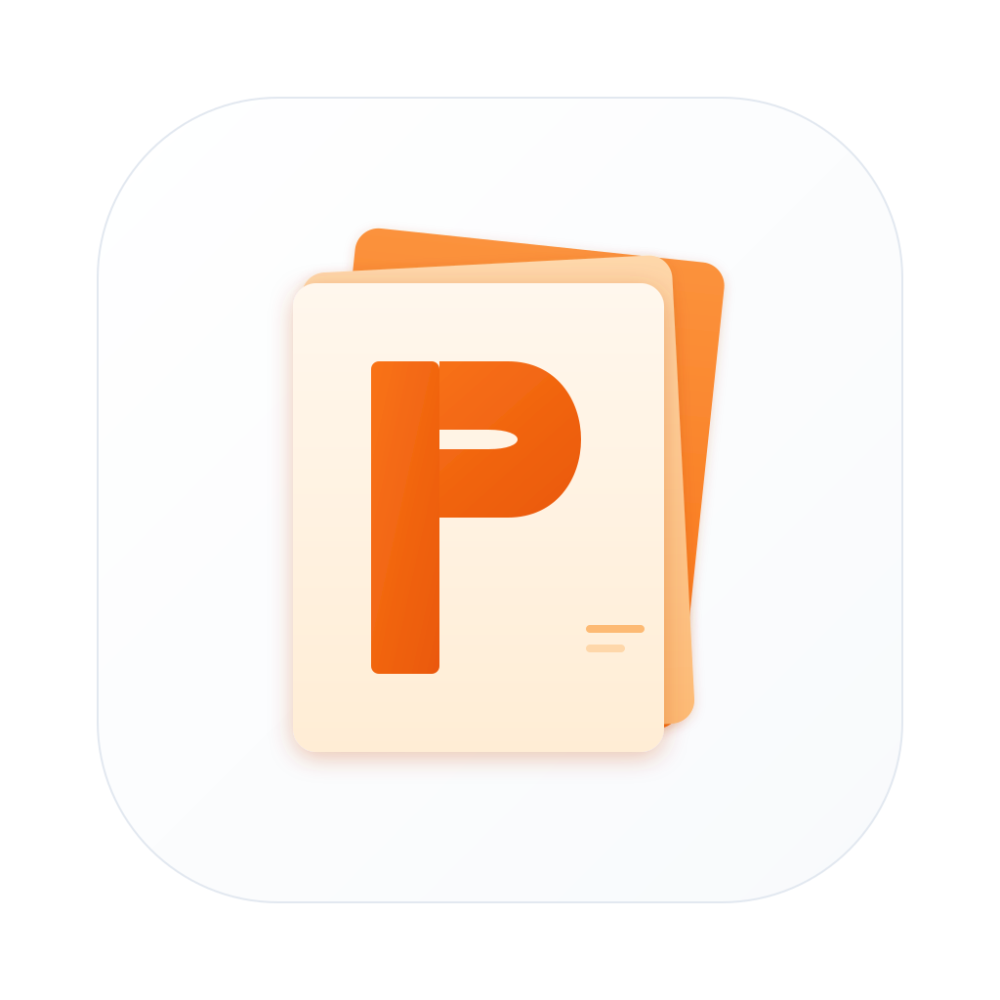

PasteMemoA lightweight, native macOS clipboard manager that lives in your menu bar. Capture everything you copy, find it instantly, paste it anywhere.
Automatically captures text, links, images, code, and files. Never lose a copied item again.
Press a hotkey to instantly search and paste from history — without leaving your current app.
Recognizes content types automatically — links with favicons, code snippets, colors, file paths, and more.
Pin important clips to keep them always at the top. Quick access to your most essential items.
Full support for English, Chinese, Japanese, Korean, German, French, and Spanish.
Built with SwiftUI. Lives in your menu bar, never in the Dock. Minimal CPU and memory usage.
Press the shortcut to open Quick Paste panel from any app. Search, click, done.